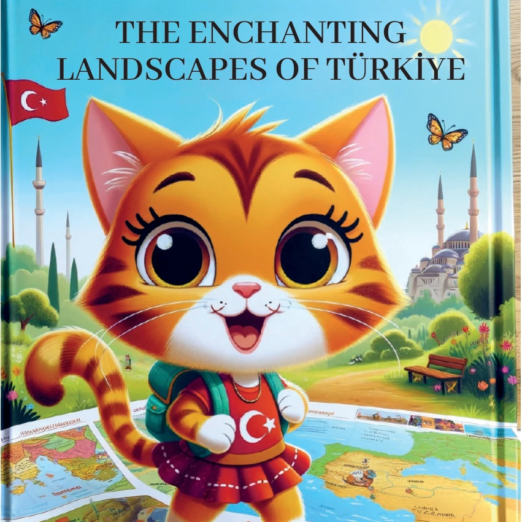
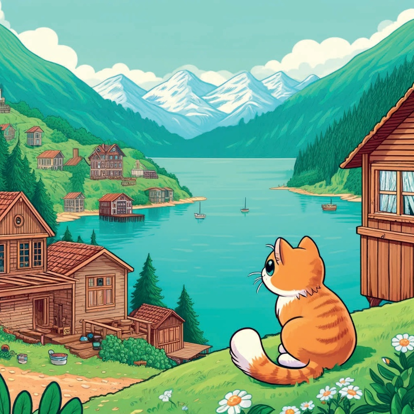
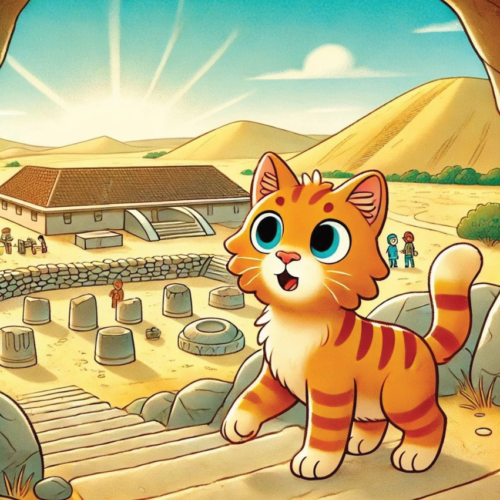
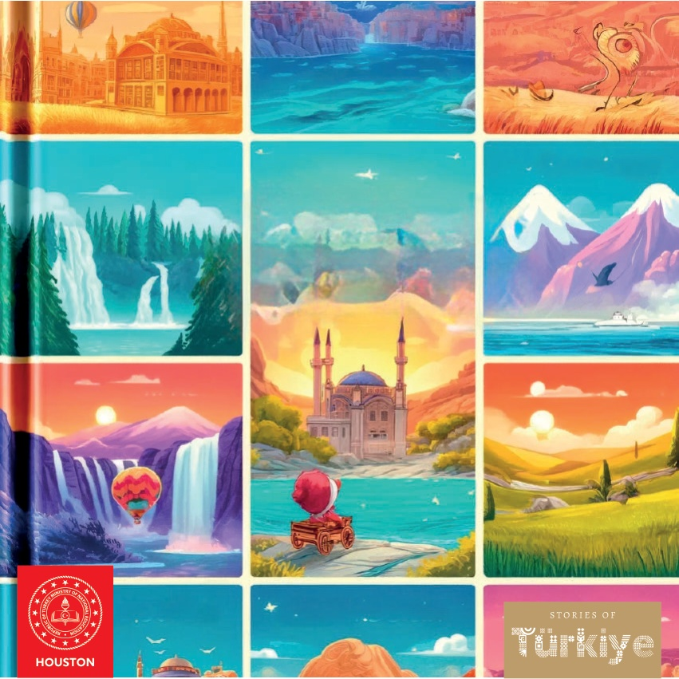

1

2

3
En gång i tiden fanns det en nyfiken liten katt som hette Karamel, och hon älskade att utforska naturen. Karamel gav sig ut på en resa över Türkiye för att upptäcka de fantastiska landskapen och naturens underverk i varje region.
4
5
Marmara Region - Istanbul: Bosphorus Karamel’s första stopp var Istanbul, där hon beundrade skönheten i Bosporen. Hon tog en båttur och njöt av utsikten över stadens silhuett och det lugna vattnet.
6
7
Aegeiska Regionen - Pamukkale.
Sedan åkte Karamel till Pamukkale i Egeiska regionen. Hon blev väldigt förundrad över de vita terrasserna och de varma källvattensbaden. Det kändes som att gå på moln.
8
9
Antalya - Düden Şelaleleri.
I Antalya besökte Karamel Düden Şelaleleri. Det brusande ljudet från vattnet som störtade ner och den gröna naturen runt omkring gjorde det till en perfekt plats för en avkopplande dag.
10
11
Karakel utforskade Kapadokya i İç Anadolu. Hon var väldigt förtrollad av de sagoliknande skorstenarna och åkte till och med i en luftballong för att se det fantastiska landskapet från ovan.
12
13
Svartahavsregionen - Uzungöl Karamel åkte till Uzungöl i Svartahavsregionen. Den vackra sjön, omgiven av gröna berg och traditionella trähus, var som en målning.
14

15
Doğu Anadolu - Ağrı Dağı.
I Doğu Anadolu besökte Karamel Ağrı Dağı, det högsta berget i Türkiye. Det snöklädda berget och legenden om Noas ark gjorde det till en mystisk plats.
16
17
Göbeklitepe i Sydöstra Anadolu var Southeastern Anatolia - Göbeklitepe Karamel’s sista stopp. Hon utforskade de gamla ruinerna och lärde sig om världens äldsta kända tempel.
18

19
Med ett hjärta fyllt av förundran och ett sinne fullt av minnen insåg Karamel att Turkiets verkliga skatter var dess vackra natur och de berättelser den berättade. Hon återvände hem, och drömde om sitt nästa äventyr.
20
21

22